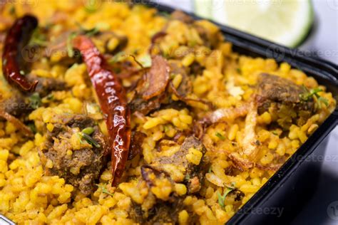

Khicuri

Description
What is kitchari?
Kitchari is a porridge-like mixture of Basmati rice and yellow moong dal (split mung beans) simmered in spices such as turmeric, cumin seeds, ginger, and black pepper.
It's one of the most basic staples in Ayurveda and has a texture similar to oatmeal. It can be enjoyed at any time of the day, however, it's most often enjoyed for lunch or dinner as a main dish.
Ingredients
- Rice
- Moong dal
- water
- Spices
- Oil
Steps
- Soak Rice and Beans: Combine rice and beans in a bowl, cover with water, and soak for 15-20 minutes. Drain and rinse until water runs clear.
- Warm Oil and Spices: Heat oil in a pot over medium-low heat. Add cumin seeds and cook until fragrant (about 1 minute), then add ginger and turmeric.
- Add Ingredients: Stir in the rice and moong dal mixture, add water, and season with salt and pepper.
- Simmer: Bring to a boil, then reduce to a gentle simmer. Cook uncovered for 30 minutes, stirring occasionally, until creamy.
- Season: Adjust seasoning and ensure the mixture is cooked through. Add water if it thickens too much.
- >Garnish and Serve: Serve immediately or cool for later storage.
Home